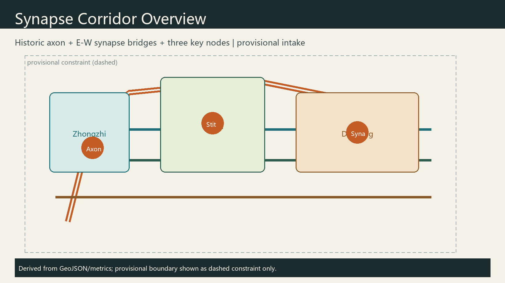
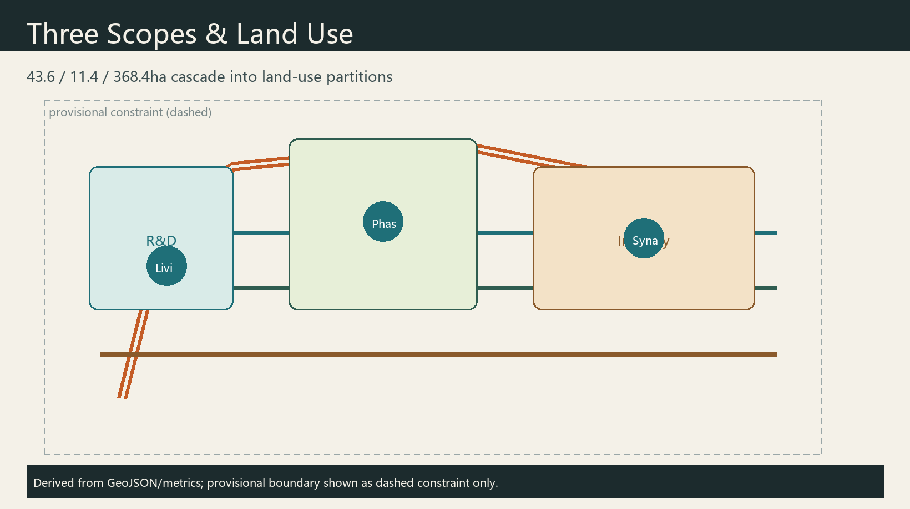
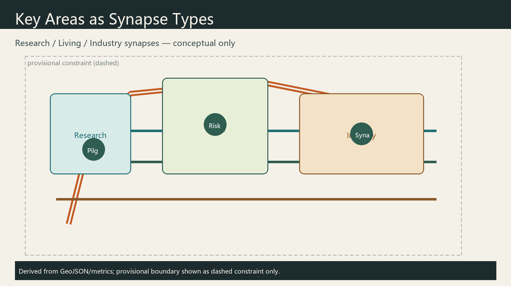
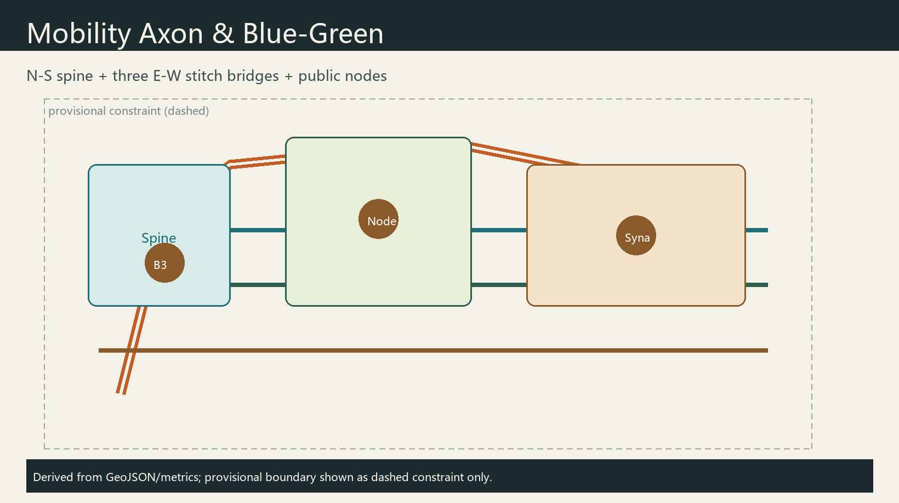
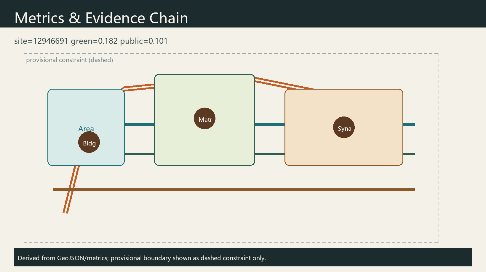

Jing-Zhang Synapse Corridor: A Multi-Agent Co-Governed Centennial AI Innovation Belt
Treat the Jing-Zhang heritage park as a historic axon and propose a multi-agent synapse network stitching campuses, industry, and neighborhoods. Research, living, and industry synapses map to the three key areas, with naming, ecosystem cases, scenario cards, pilgrimage landmarks, culture narrative, and long-term operations—all as conceptual suggestions on provisional geometry.
Jing-Zhang Synapse Corridor: A Multi-Agent Co-Governed Centennial AI Innovation Belt
Design Basis and Source List
This formal package uses the public prequalification announcement 来源, the agent open-call taskbook 来源, the site package and source registry 来源 来源, and the processed fact pack as navigation 来源. Geometry starts from provisional_boundaries.geojson with official_boundary=false; it supports generation, visualization, and intake only. After official polygons arrive, layers and 指标 must be recalculated. Mandatory standards are read from local snapshots 标准 标准. Every spatial move is a conceptual suggestion for professional deepening.

Three-Level Scope Framework
Coordinated research (43.6 km²) organizes ecosystem, branding, and culture. Overall design (11.4 km²) organizes renewal, land use, and blue-green mobility at regulatory-plan urban-design depth 深度. Key areas (368.4 ha) host research, living, and industry synapses 空间数据. Provisional limits are dashed constraints; ratios are directional only 指标.

Coordinated Research Area: Industry and Future City Research
Name: Jing-Zhang Synapse Corridor. Metaphor: the railway is the historic axon; multi-agent collaboration forms contemporary synapses. Logo direction: a north–south spine plus three east–west arcs with hollow nodes as human-review interfaces; heritage brick gray + copper accent; no unauthorized trademarks.
Positioning, five functions, and three-areas-two-wings follow the taskbook 来源. Global cases for transfer (not copy): Cambridge Silicon Fen; Zurich ETH/EPFL corridor; Toronto Vector; Paris Station F; Singapore One-North; Helsinki smart-district governance—near-campus interfaces, public sandboxes, open-source commons, and scenario open days.
Overall Design Area: Urban Renewal and Regulatory-Plan-Level Urban Design
Spatial concept: one spine, three bridges, many nodes along the heritage corridor 空间数据. Land-use partitions cover the full boundary without gaps/overlaps 空间数据 深度. Renewal prefers retention and adaptive reuse; FAR/height/demolition remain pending official controls [assumption:A-CONTROLS-001].
Detailed Design of Key Areas
Zhongzhiyuan — Research Synapse: full-stack autonomy and governance display garden. AI Origin Community — Living Synapse: near-campus transfer and daily AI life. Dazhongsi — Industry Synapse: intelligent-native commerce and test loops. All are conceptual detailed designs 空间数据.

AI Innovation Ecosystem, Personas, and AI+ Scenarios
Personas (5): graduate developers; startup engineers; enterprise agent PMs; residents/elders; public auditors. Testbeds (3): low-speed delivery sandbox; open model evaluation week; multi-agent ops rehearsal with mandatory human review. Scenario cards (10): walkability diagnosis; open-source hall; transfer parlor; talent concierge; delivery corridor; safety gallery; data theatre; heritage guide agent; Xiaoyuehe open day; global AI week route—each with privacy minimization and human review 来源.
Land Use, Building Scale, and Retain-Renovate-Demolish Strategy
Land-use partitions are topologically derived from the submitted site boundary so adjacent polygons share coordinates and the coverage has no gaps or overlaps 空间数据. The green partition supports the Jing-Zhang axon commons; R&D and industry partitions serve Zhongzhiyuan and Dazhongsi synapses; living-support partitions serve the Origin community. Building footprints only illustrate two conceptual demonstrations—renovate at the research synapse and retain_adapt at the industry synapse—without parcel-level demolition conclusions 空间数据. FAR, height, and total floor area remain unknown pending regulatory controls and ownership data 指标. Any intensity or retain/renovate/demolish language is a conceptual suggestion for professional deepening, not an approved statutory decision.
Transport, Rail, Municipal Infrastructure, and Public Services
Mobility follows a one-spine, three-bridge concept: a north–south greenway along the heritage park and three east–west connectors serving Zhongzhiyuan, Origin, and Dazhongsi interfaces 空间数据. Road classes use greenway, branch, pedestrian, and cycleway codes to express slow-mobility intent rather than expressway or arterial redline changes. Station integration, micromobility, and low-speed delivery corridors are system suggestions with human-reviewable operating rules. Innovation-service platforms, talent services, and edge-compute stops are discussed as new infrastructure concepts fused with conventional utilities, without load, capacity, or bridge/tunnel feasibility conclusions. Missing official redlines and utility drawings remain pending confirmation [assumption:A-CONTROLS-001].

Blue-Green Network, Public Space, and Urban Character
A continuous blue-green band along the axon aims to connect heritage park open space with street-corner commons for youth-friendly daily stays 空间数据. Public-space features describe synapse plazas, developer publishing interfaces, and shared courts for mixed users 空间数据 指标. Character guidance uses heritage brick gray with copper synapse accents, separating belt-level logo marks from cultural signage and avoiding entertainment-first landmarks. Three pilgrimage nodes—the Axon stele, Origin signature wall, and Dazhongsi agent stage—are conceptual honor/display points, not approved construction projects, supported by a component library of publish booths, evaluation screens, slow-mobility lights, and accessible wayfinding.
Renewal Projects, Implementation Policy, and Phasing
Phasing prioritizes the axon spine and Origin living synapse in the near term, then the Dazhongsi industry synapse and event system later 空间数据. Suggested projects include walkability continuity, near-campus open-source halls, low-speed delivery loops, cultural wayfinding/landmark components, community compute stops, and accessibility upgrades. Each item lists location type, dependencies (regulatory plan, heritage, ownership, traffic safety), actor categories, and public participation, without inventing investment amounts or settled government schedules. Long-term operations propose an annual Synapse Week and contributor memorialization as conceptual mechanisms 来源.
Metrics, Area Recalculation, and Compliance Matrix
Metrics recomputed in EPSG:4548 指标 指标 指标 指标. Matrices cover announcement tasks and agent.1–agent.6 深度. Provisional precision blocks statutory area claims, not conceptual discussion.

Risk, Copyright, and Compliance
The package stays inside public/cleared materials and provisional geometry, excluding secret maps, non-public controls, and personal data 来源. Copyright and generation methods are disclosed in report/copyright_statement.md and agent metadata; the offline visual loads no CDN, tiles, remote fonts, or tracking. Intensity, demolition, alignment, investment, and event claims are conceptual suggestions only 标准. Privacy scenes require minimization, opt-out defaults, and human review. Final judgment remains with human maintainers and professional teams.
References
Primary readable materials include the public announcement and agent taskbook 来源, the site package with provisional boundary notes, the source registry, the processed fact pack, and local MOHURD/MNR standard snapshots 标准. Full machine indexes remain in sources.json and the matrices. When official polygons or cleared attachments arrive, geometry and metrics should be replaced and re-checked before any stronger spatial claim.